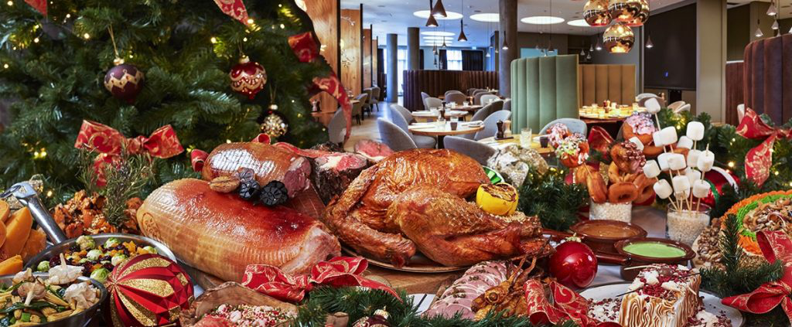

The Philippines is known for having the longest Christmas season in the world! As soon as the "Ber months" (September, October, November, December) begin, Filipinos start playing Christmas carols, setting up decorations, and preparing for the grandest holiday of the year.
Christmas Eve is filled with excitement and joy as families gather for Noche Buena at midnight. Traditional Filipino dishes such as lechon (roast pig), hamon (Christmas ham), bibingka (rice cake), and queso de bola are served. Fireworks light up the sky, and children eagerly wait to open their gifts!
On Christmas Day, families visit their relatives, exchange gifts, and give aguinaldo (cash gifts) to children. Many also take this time to reflect on the spiritual meaning of Christmas, attending church services and helping those in need.
Filipino Christmas is all about family, faith, and festivity. Unlike in other countries where Christmas is a single-day event, in the Philippines, it is a season of giving, love, and gratitude. Overseas Filipino Workers (OFWs) make it a priority to come home, making the holiday even more meaningful.